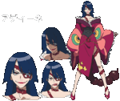
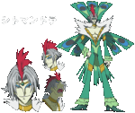
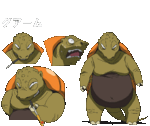
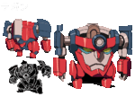
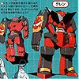
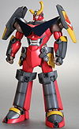
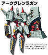
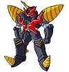
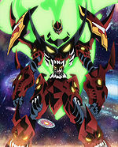
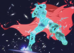

De: La Frikipedia, la enciclopedia extremadamente seria.
De: La Frikipedia, la enciclopedia extremadamente seria. De: La Frikipedia, la enciclopedia extremadamente seria.
| De la serie anime para todos: | |||
| Tengen Toppa Gurren-Lagann | |||
| |||
| Género: | Primero va de excavaciones, luego roboticacos y al final una especie de mala imitación de guerra de las galaxias | ||
| Episodios: | 26 | ||
| Autor del manga: | Un montón de gente que quizo poner su propia historia en la trama principal | ||
| Publicación: | Cuando termine la guerra contra los anti-espiral porque se niegan a publicarlo | ||
| Publicado en: | Chapas de hierro | ||
| Director del anime: | Taladreitor | ||
| Transmitido en: | algún | ||
| Ovas: | una | ||
| Películas: | solo dos peliculas que son las versiones acortadas de las dos sagas de la serie respectivamente | ||
| Notas | ¿Cómo hacen que cada robot que aparece sea unas 1000 veces mayor que el más grande visto antes? | ||
Otra serie de animación con roboticacos creada por GAINAX llena de connotaciones sexuales explícitas y alusiones a la época comunista sufrida en Gran Bretaña en los años 50. El plantel de protagonistas son un claro reflejo de los institutos españoles actuales, el cual esta compuesto por un niño reprimido victima del bulling en su aldea, un bakala con aires de grandeza y una calientapollas.
La serie sin duda esta dirigida hacia los más machos, ya que consiste en puros gritos, explosiones y orgasmos (más que todo orgasmos), además lo que prima en la historia es ir teniéndolo todo más grande (y entre más cabezas mejor).
La historia gira en torno a Simón, un chaval que un día encuentra un robot con el cuál provoca el segundo Holocausto al exterminar a todos los hombres-bestia que habitaban la tierra y más adelante se va al espacio a enfrentarse contra el monstruo espaghetti volador dios también conocido como el Rey Anti-Esprial.
Esta cutre serie goza de la friolera de dos partes que se pueden diferenciar igual de bien que se diferencia una pelota de un huevo. Estas partes son:

Simón, el típico chavito de anime emo, se dedicaba a "penetrar" cosas con su "taladro" en la aldea subterránea en la cual vivía junto con su explotador leal compañero Kamina, un día encuentra un pinche robot en forma de cabeza, el cual Kamina llama Lagann, con el que masacran a otro robot que perseguía a yoko, típica chica de buenas curvas que sirve para fanservice. Los tres logran salir a la superficie en donde se encuentran con los chulos colegas de Yoko.
A partir de ahí, descubren que la tierra es habitada por hombres-bestia creados por un tal Lord Genome que pilotan robots llamados Ganmen para mantener a los humanos bajo tierra. Luego Kamina se roba el robot de una de estas criaturas el cual vio aparcado en una esquina en pleno de una feroz pelea, Kamina decide llamar al robot Gurren, de ahí el nombre de la cutre serie.
Más adelante conocen a Viral, un hombre bestia que se encarga de violar eliminar a los humanos y que compremete convertir a Simón y compañia en pasto de los gusanos, sin embargo este le da la "brillante" idea a Kamina de unir su robot con el de Simón "penetrandolo" encima del suyo creando a un robot más grande al cual llaman Gurren Lagann (que original GAINAX, que original).
Luego Simón, Kamina, Yoko y un mecánico afeminado que ama el aceite van en busca del cuartel general almacén de droga de los Ganmen y poder esnifar a gusto. Por el camino encuentran a varios subnormales los cuales se unen a su causa y así forman la gran brigada homosexual Gurren con Kamina como líder.
Cuando llegan al cuartel general, descubren que la instalación para almacenar droga era en realidad una sucursal de las inmobiliarias de Lord Genome que se podía mover para poder recalificar más terrenos. Ahí se enfrentaron al hombre simio agente inmobiliario de Genome el cual le da de mil hostias a Gurren, piloteado por Kamina, sin embargo este muere por acumulación de orina. Tras eso, como en la serie les recortaron el presupuesto por haber matado a un personaje tan carismático profundamente gilipollas, les encasquetaron a una nueva chavalita, Nia, hija de Lord Genome, quien sería la que se encargaría de que Simón no se comportara como un emo.
Después de eso y de pegarle cuatro tortas a los otros agentes inmobiliarios que Lord Genome mandó para que recalificaran a Simón y a su pandilla estos llegan a Tepperin, la única ciudad libre de cubos de basura, llena de comida y camellos dispuestos a pasar costo metido en las orejas. Simón y su tropa se liaron a tortas con los pringadillos que quedaban an Tepperin y se dispusieron a tomar el centro de mando de Lord Genome en su inmobiliaria. Después de haber destrozado sus robots en batalla, Simón usa su polla para hacer un hueco en el pecho de Lord Genome y así matarlo.
Unos siete años después Simón montó un tinglado para que todos vivieran chachi-guachi en la superficie y pudieran acceder a prostíbulos fácilmente, lo cual no era muy bien visto por los Anti-Espirales, los cuales se montaron un guerra hace años por lo mismo y por eso Lord Genome recalificó todos los prostíbulos para evitar que pasara. Los tipos esos vuelven y resulta que ... ¡¡¡Nia es una Anti-Espiral!!! ... ¿Eso no quiere decir que ella es el producto de una relación entre Lord Genome y un Anti-Espiral? (bueh, no es para tanto de todas formas).
Por eso Simón se agarra otar vez a Gurren Lagann después de que el hijoputa de Rossiu lo metiera en chirona para que le destrozaran el culo y se metiera de leches con Viral. El tipo agarra a Viral para que sea su co-piloto y le ayude a penetrar a los enemigos.
Después de que le meten unas 9001 leches a los Anti-Espirales, estos se largan del planeta tierra y Simón decide ir a buscar a Nia al quinto pino de las dimensiones junto con un nuevo robot 80 veces más grande que los que había antes. Después de que llegan a la dimensión en la que viven los Anti-Espirales, el rey Anti-Espiral decide iniciar una divertida pelea contra la brigada Gurren en la que destruyen algunas galaxias (cerca de 14) después de sufrir unas pocas bajas (un 90%, y solo llevaban 5 pringados). Al final los que quedaban sobreviven, los hombres la palman, Nia no era más que una ilusión y Simón se convierte en un sucio mendigo sin hogar.
Si no tienen tiempo, no les gusta los robots gigantes o simplemente no quieren gastarse alrededor de 13 horas viendo los 26 episodios entonces vean este video.
Para asimilar más fácilmente la empanada mental que genera la serie serie, se han recogido aquí los principales conceptos:
Es el prota de la serie por ser el único capaz de pilotar su cutre-robot enano penetrador. Era el mejor excavador penetrador de su aldea y se encargaba de ampliar el terreno. Un día mientras "penetraba" encontró a su roboticaco y la llave de paso, con el cual se cepilló a un inocente Ganmen que solo quería ajustar cuentas con la zorra de Yoko.
Simón comienza como un pequeño chaval sucio que le gustaba andar todo el tiempo con su taladro en mano, al encontrarse a Lagann logra salir a la superficie para poder usar su taladro con otras inocentes criaturas, siete años más tarde empieza a construir prostíbulos para todo el mundo y así fomentar el arte de la penetración a taladro, sin embargo a los Anti-Espirales no les gusta que el mundo se este volviendo lujurioso y lleno de lefa así que le declaran la guerra a Simón y se cogen a su chica.
Simón furioso por no permitirle usar su taladro pa' seguir penetrando se convierte en una especie de pirata espacial y se va a una guerra con unos cinco o seis perritos falderos de su antigua brigada a pelear contra una galaxia entera. Al final ganan después de perder a más de la mitad de la tripulación inicial, Simón se casa con la zorrita a la que salvo pero esta se desintegra y como no pudo follar con ella al acabar la guerra este se vuelve alcohólico, se va quién sabe a donde y termina como un sucio mendigo en harapos que le gusta andar todo el tiempo con un taladro aún más grande en mano (justo como al principio...pero más viejo y sin poder haber usado su taladro con alguna chava).
Simón tiene como mascota un pokémon tipo topo-cerdo llamado Boota, el cual siempre para en el hombro de este, En el busto de Yoko o cubriendo la polla de Kamina. Casi por el final de la serie, el topo evoluciona en humano ... solo para convertirse en topo de nuevo después de unos minutos. En conclusión, Boota solo ha sido útil para que Simón y Kamina pudieran comerse su trasero, el cual le crece de nuevo como una lagartija, para no perder una batalla (nada de esto es broma).
El pedófilo de la aldea en la que vivía junto con Simón, se podría decir que era como el Michael Jackson del lugar, también era un gilipollas enorme, era tan gilipollas que usaba esas gafas anaranjadas en una aldea subterránea ¿Quién hostias usa gafas oscuras en un lugar con tan poca iluminación? Llega su gilipolles hasta tal punto que desafía a un robot 15 veces mayor que él a pecho descubierto y con una espadita de mierda. Más tarde el tipo se agencia su propio Ganmen mientras este estaba aparcado y con una palanca. El tipo se mete de leches y por mucho que le metas seguirá queriendo más, por lo que se cree que es una mezcla de masoca, emo y yonki, sin embargo es considerado como el personaje más varoníl que haya existido a pesar de que en un episodio le pidio a Gimmy que le metiera su dedo por el culo (tampoco es una broma).
El muy gilipollas le mete un Falcon punch a Simón para que dejará de pensar en las tetas de Yoko y pueda penetrar bien y asaltar la oficina de recalificación de los hombres-bestia, sin embargo Kamina la palma por una acumulación urinaria (además de ser atravesado por una lanza de 15 metros de largo, pero eso fue lo de menos).
Frases celebres:
Para que no faltara, siempre tiene que haber una chica de curvas peligrosas en el grupito. Esta calientapollas hermosa joven a la que le gusta campar por ahí con su peligroso rifle-consolador extra grande y freír Ganmens a tiros (algo que solo consigue dos veces). Es la viuda negra de la serie, ya que tipo que se enamora de ella, tipo que en el siguiente episodio muere (Kamina y Kittan).
Esta aparece cuando un Ganmen cae en la aldea de Simón y Kamina porque ella peleaba para que no la matara por negarse a hacerle un completo por 50 leros. Después Lagann "taladra" al Ganmen y todos felices y contentos salen a la superficie. Allí se encuentra con todos sus clientes amigos y especialmente a Ron. Durante la lucha contra los hombres-bestia ella solo se dedica a intentar reventar Ganmens con su rifle y solo una vez pilota a Gurren.
En la segunda saga ella se volvió profesora para enseñarles a los niños (especialmente a las niñas) lo que debían hacer, pero al enterarse de que Nia no se dejaba follar por Simón fue a soltarlo de inmediato a la capital para que fuera a darle una paliza a los Anti-Espirales porque no permitirían enseñar lo que ella enseñaba. Después ella se metió en la pelea pilotando un Ganmen medio viejo y con fugas de energía en un 59,3% de su estructura y que no es derribado nunca, pero los Ganmens chulos de sus colegas caen como moscas. Al final vuelve a enseñar a sus niños lo que deben hacer para activar su energía espiral.
En origen era el personaje que metieron después de la muerte de Kamina porque ella pedía menos que ese gañán. Aparece para evitar que Simón se vuelva emo porque Kamina murió lo hecharon de la serie. Ella se pone a hablar con Simón y este vuelve a pilotar a Gurren-Laggan gracias a que antes no se dejaba pilotar por homosexuales.
La brigada Gurren se carga a su papi. (sí, es la hija de Lord Genome, el era de envejecimiento retardado y para matar el aburrimiento criaba hijas y después, como todo padre amoroso, las violaba mataba metiendoles la polla metiendolas en cajas para que piensen en lo que hicieron mal). Se queda a vivir con Simón, pero cuando él le dice de la forma mas inentendible posible que se quiere casar con ella, esta le dice que no, para una chica que solo ha hablado con su padre (analfabeto y borracho) por los primeros 12 o 14 años de su vida era de suponerse. Después capta el mensaje y al leer en internet lo que era el sexo acepta. Para su mala suerte esa misma noche se activa el programa de eliminación humana y resulta que ella era una Anti-Espiral (¿Cómo? Nadie sabe y a nadie le importa).
La cuestión es que ella monta toda una guerra para aniquilar a los humanos calenturientos para que dejaran de follar y que se pasaran al ciber-sexo, que era lo que promulgaban los Anti-Espirales. Sin embrago Nia se le aparece a Simón varias veces para darle la indirecta que todavía tiene un chance de follar con ella, el entiende ya que estaba bastante caliente ,y se le habia perdido la foto de Yoko, asi que decide ir en su busqueda. Tras varias victorias sobre los Anti-Espirales ella recapacita y se acuerda de los momentos que tuvo con Simón, donde no paso naadaaa, así que ella les ayuda a encontrar el sitio donde está el Rey Anti-Espiral para de una vez sacarse ese peso de encima.
Al final Simón la rescata, pero como era una Anti-Espiral adicta al ciber-sexo desaparece con estos al no haber internet por la destrucción de los Anti-Espirales.
Es el mecánico del grupo, y no hace falta decir que no fue obligado, fue por vocación propia, ya que ama el aceite. Es uno de los colegas de Yoko que al ver que Kamina y Simón eran más palurdos que un Neanderthal al manejar robots, decidio echarles un cable con las reparaciones y demás cosas.
Durante casi toda la serie el tipo consigue arreglar desperfectos en un robot tales como que le corten un brazo o que lo dejen hecho una mierda en una noche en medio del desierto.
Cuando logran derrotar a Lord Genome este se convierte en el dependiente de un salón de belleza un funcionario más al igual que la mayoría de los que formaban la brigada, pero cuando estalla la guerra se dedica de pleno a hacer armas sexuales para derrotar a los Anti-Espirales dado que seguramente prohibirían su afición al aceite.
Como curiosidad final, en la serie ningún hombre le da la espalda (solo los niños y los que pueden ahostiarlo sin problemas), además se puede hacer cirugías plásticas a sí mismo para no envejecer jamás.
Es el hermano secreto de Sakura Haruno, dado que comparte su amplia frente con ella. Es un chaval más plano que nada y un completo caguetas que no hace las cosas como los personajes de la serie: Al buen tuntún. Este se para a pensar las cosas ochenta veces y cuando tiene una solución p'al problema, todo está perdido.
Era de una aldea en la que eran tan pobres que no tenían suficiente costo comida para más de 50 tipos, así que se cansó y se empancipó del tarado de su padre para irse de fiesta con Kamina y Simón. En la Brigada Gurren poco pinta excepto ser el conejillo de indias de Nia para probar sus aberraciones culinarias.
Cuando patean a Lord Genome el tipo se convierte en un vil y estresado funcionario estilo General Morden, con lo que intenta dar un golpe de esta el muy cabrón, pero se las ve negras y le sale el tiro por la culata al intentar salvar a la gente, por lo que intenta volarse la tapa de los sesos, pero Simón lo detiene con el mismo Falcon punch que aprendió de Kamina después de aprenderse la técnica de teletransportación de Goku. Después de eso, poco pinta el frentón.
Poco pinta este super viejales, ya que lo único que hace es trabajar como un negro y nunca cansarse o envejecer. se creía que era Solid Snake camuflado, pero después nos enteramos que es un ¿hombre-bestia? creado para servir y proteger a Nia...la pregunta aquí es: si el papi de Nia tenía la intención de matarla desde un principio Ppara qué fue creado en primer lugar?... ¿Los anti-espirales sabían de él?...¿Qué hace después de la muerte de Nia?... ¿Ahora le sirve a Simón?...¡OH claro! Este anime fue creado por GAINAX después de todo.
Este es un grupo de hermanos conformados por tres mujeres y un hombre que evidentemente, como malpensado que eres, hacen esas cosas que te gustaría hecer con mujeres. Los cuatro campaban en medio del desierto con unos bichos raros que de ser trasquilados podrían ser un abrigo de armiño. Cuando estaban en el desierto se dedicaban a reventar pobres Ganmens indefensos con condones rellenos de petardos bombas. Después se metieron en la Brigada Gurren y a partir de ahí solo el hermano mayor fue el único que hizo algo en la guerra.
Cuando apalean a Lord Genome el hermano mayor se hace ministro, la hermana mayor es violada se casa y tiene una hija, la menor es enviada al manicomio pero se fuga y la del medio se queda colada por el frentón de Rossiu. Ante esto, la que va a por Rossiu empieza a mandar al hermano mayor, el cual quería hacer una orgía como antes machacar unos cuantos culos, pero Rossiu no quería pelea así que salió por piernas. Al final el hombre muere como un macho en una misión suicida, y las tipas se quedan por ahí. Los hermanos son:
Los dos críos que se lleva Rossiu para explotar en los trabajos del Dai-Gurren. Durante la primera parte de la serie no hacen nada importante salvo gritar o hacer el memo.
En la segunda parte los chavales ya creciditos se dedican a pilotar los Guraparl, que no son nada más que imitaciones baratas de Gurren-Laggan. Los chiquillos se las ven negras cuando tienen que lidiar con su primer Anti-Espiral, pero Simón les salva el culo y para casa. Cuando están en el espacio los dos a pesar de decir que tienen bastante tiempo de experiencia, son más inútiles que un tetrapléjico manco, cojo y babeante, a los cuales Jougan y Barinbou salvan para que el resto de la serie se dediquen a quejarse de que muere mucha peña.
Este era el encargado de que los humanos que subían a la superficie no fueran a las urbanizaciones de los Hombres-Bestia a rebuscar en los cubos de basura, y armado con su Ganmen molón con casco y espaditas casi se pule a leches a Kamina en su primer roce, pero de no ser porque se clavó a Lagann en la chola, lo haría papilla. Después de que le dieran unos cachetes y se fuera lloriqueando a casa aparece después con su jefazo en la oficina de recalificación móvil para pulir a leches a todos los que se le metan enfrente, pero como él es el malo, pierde.
Tras múltiples roces con Simón (porque Kamina había sido expulsado) Lord Genome le dice que es imposible vencer a Gurren Laggan porque es mucho más guay, y Lord Genome le hace inmortal.
Siete años después de que masacraran a Lord Genome el tipo va a la carcel por haber destruído un prostíbulo, pero más tarde se encuentra a Simón y él empieza a decirle que no vale para nada, con lo que se arrean de leches y se hacen amigos en las celdas de aislamiento. Después, cuando salen de la carcel, Simón le dice que como no hay nadie de la vieja escuela que le ayude con su roboticaco, le ayude poniéndose debajo (sí, así es). En la guerra ellos dos son los que aniquilan al 78,3% de los enemigos y que hacen todo el trabajo sucio. Debido a que Leeron lo anda rondando mucho tiempo y es un hombre-bestia, era eviddente que algún día alguien dijera que quiere matar a esa locaza. Al final Viral se queda por ahí tan ancho.
Este era el malo maloso de toda la historia en la primera parte. En origen él poseía el derecho de propiedad de toda la superficie, recalificó todo el terreno y mandó a la gente a vivir como ratas debajo de la tierra. Entonces él mismo hizo a los hombres-bestia para que le hecharan un cable vigilando su terreno. Y así hizo un mundo de paz y felicidad, pero Simón y Kamina decidieron ir a por él porque los hombres-bestia se pasaban tres pueblos y deciden ir a su oficina para darle tres hostias. Simón consigue atravesarle el pecho a Lord Genome con su polla taladro y a pesar de tener el esófago y los pulmones atravesados este le dice que cuando se creen un millón de prostíbulos, será el fin de la humanidad.
Siete años después, la cabeza de Lord Genome fue almacenada en una lata de conserva y de ahí consigue volver a la vida explicándoles que él solo había recalificado la superficie porque los Anti-Espirales decidieron que había demasiados prostíbulos y se estaban pasando, así que él después de perder una partida de parchís contra el Rey Anti-Espiral decidió eliminar el problema. Se pasa casi toda la serie dentro de un tarro explicando las cosas como si no fueran con él (Igualito que Zordon de los Power Rangers). Al final el tipo muere tras convertirse en un enorme falo taladro para que Simón "penetre" al Rey Anti-Espiral y dejara en paz sus prostíbulos.
Antes eran una forma de vida espiral, pero debido a que comprendieron que si seguían follando compulsivamente acabarían todos llenos de lefa hasta las cejas, así que decidieron irse al ciber-sexo para evitar que pasara lo primero. Atacan con unos bichos que ellos creaban a través de un programa cibernético con el cual creaban piezas de tetris con las que hacían sus cutre-soldados, los cuales, sin explicación alguna, morían al ponerse en linea.
Aparecen en la segunda parte de la serie para desvalar que eran los malos de la película y que quieren evitar que los humanos, de tanto follar, inunden el universo con lefa. Por eso se dedican a matarlos, pero como ahora follan más, tienen más poder espiral y por eso pueden acabar con ellos. Kittan acaba con el filtro Anti-Spam de los Anti-Espirales y por eso pueden ir a su universo para poder meterles la del pulpo. Los Anti-Espirales al tener una tecnología muy avanzada, generan una realidad virtual para atrapar a los miembros de la brigada Gurren en sus fantasías sexuales, pero como era de esperarse, Simón tiene una fantasía sexual con Kamina y como este era el personaje más gilipollas de todos y al que menos le gustaba el ciber-sexo, los pudo liberar de las fantasías. Al final Simón se carga a los Anti-Espirales gracias al ataque penetrador de Lagann.
Estos cuatro son los que llevan las oficinas de recalificación móviles de Lordgenome. Todos tiene su propia oficina personalizada, pero compiten por el nivel de ventas, por lo que no se llevan muy bien. Los cuatro son:
| Foto de Archivo | Descripción | Fortaleza Ganmen |
|---|---|---|
| Timilph |
Es el primero de los cuatro, siendo el que estrena el taladro de Simón con su precioso |
Dai Gunzan |
|  Adine |
Es la segunda, la zorra del equipo. La muy puta quiere aprovechar que han matado a su amigo para poder trepar en la escala de ventas. Aparece una vez, pero se larga al ver a Nia. Después regresa con su submarino aprovechando que a Dai-Gunzan le han acoplado un par de remos para travesar el mar (como cojones hacen eso si es un puto portaaviones), pero Adine disfruta |
Dai Gunkai |
|  Cytomander |
El tercero de los cuatro, este es el |
Dai Gunten |
|  Guame |
El último de los cuatro, un puto cobarde. Aparece una vez y les tiende una emboscada a la brigada Gurren con |
Dai Gundo |
El robot principal (Gurren-Laggan) sufre diversas liposucciones y aumentos de pecho transformaciones y mejoras a lo largo de la serie. Ná, mejor expongo los grados de este mecha:
| Afoto del coso | Descripción |
|---|---|
|  Lagann |
Se lo encuentra Simón un día escarbando en su pueblo (y las llaves las encontró antes). Este robot enano y cabezón es lento en apariencia, dado que mágicamente puede superar en carrera a dos Ganmen furiosos. Su principal arma es su |
|  Gurren |
Este se lo afana Kamina cuando lo encontró aparcado en el parquing de la esquina, pero fue tan profundamente gilipollas para destrozarle un brazo y una pierna en la primera pelea. Cuando tiene el primer roce con Viral, este se dedica a masacrar a Gurren vilmente, hasta que lleva Simón con Lagann y hacen su fusión por medio de la penetración. En la segunda parte de la serie siempre está fucionado con Lagann. |
|  Gurren-Lagann |
La cosa empieza a animarse. Por medio de una "penetración" Lagann se fusiona con Gurren y así tiene más poder. Su principal ataque super-devastador es el Giga Drill Braker, por el cual porculan sin compasión al Ganmen enemigo con un |
|  Arc Gurren |
Básicamente es que Gurren-Lagann se aburre de penetrar tantos enemigos inútiles y decide penetrar la nave que llevaba a los humanos fuera de la tierra para ser desproporcionadamente más grande que antes. Poco hay que decir, ya que solo ataca una vez y solo consistía en lanzar un huevo de taladros y que mejor funciona cuantas más calenturientas sean los eróticos pensamientos de la tripulación y los que estén a bordo. |
|  Chouginga Dai Gurren |
Con un nombre más raro que un boniato podrido, esta Mecha es la fusión del Arc Gurren con la nave Cathedral Terra. Gracias al acto |
|  Tengen Toppa Gurren Lagann |
Es el último de esta escala de evolución, infinitamente más grande que cualquier Mecha que hayais visto. Este modelo con tanto estilo es copiado por los Anti-Espirales para pelear contra los buenos, pero el original le da una paliza de órdago al falso. Cuando vencen a los Anti-Espirales el robot se va desmontando como una muñequita rusa para ganarle al bicho más grande que hay en toda la serie con un |
|  Super Tengen Toppa Gurren Lagann |
¿Pensabais que el TTGL era el más grande, ¿no? ¡os jodeis! Esta transformación es 50 veces más grande que su antecesor, con una apariencia |
Autor(es):